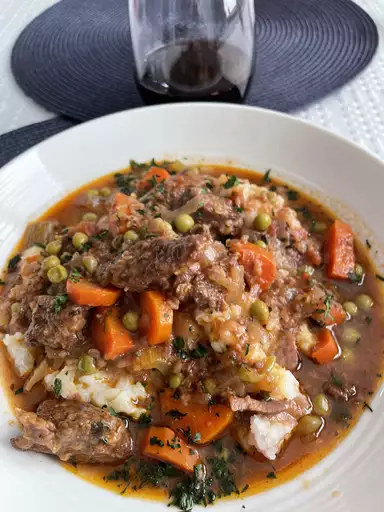

Slow Cooker Beef Stew

This slow cooker beef stew is the perfect low maintenance meal for chilly fall and winter nights. Full of cozy flavor and hearty ingredients, this beef stew recipe will warm you up from the inside out.
Ingredients:
- 2 pounds beef stew meat, cut into 1-inch pieces
- ¼ cup all-purpose flour
- ½ teaspoon salt
- ½ teaspoon ground black pepper
- 1 ½ cups beef broth
- 4 medium carrots, sliced
- 3 medium potatoes, diced
- 1 medium onion, chopped
- 1 stalk celery, chopped
- 1 teaspoon Worcestershire sauce
- 1 teaspoon ground paprika
- 1 clove garlic, minced
- 1 large bay leaf
Cooking Instructions
- Prep ingredients
- Place beef stew meat in the slow cooker
- Mix flour, salt, and pepper together in a small bowl. Pour over meat, and stir until meat is coated.
- Add beef broth, carrots, potatoes, onion, celery, Worcestershire sauce, paprika, garlic, and bay leave; stir to combine.
- Cover, and cook until beef is tender enough to cut with a spoon, on Low for 8 to 12 hours, or on High for 4 to 6 hours.
- Serve hot and enjoy!
Go Home